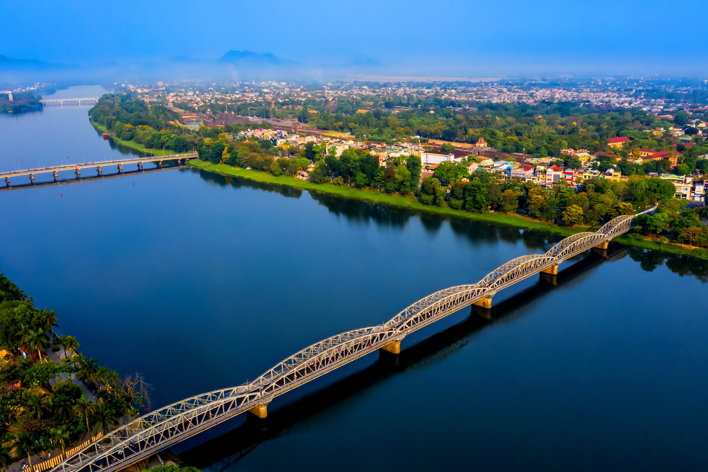
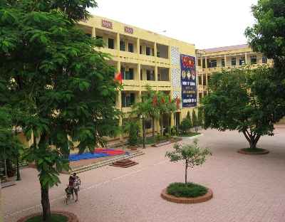
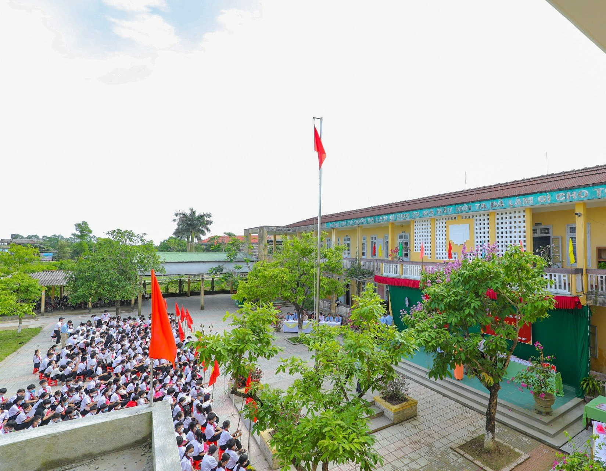
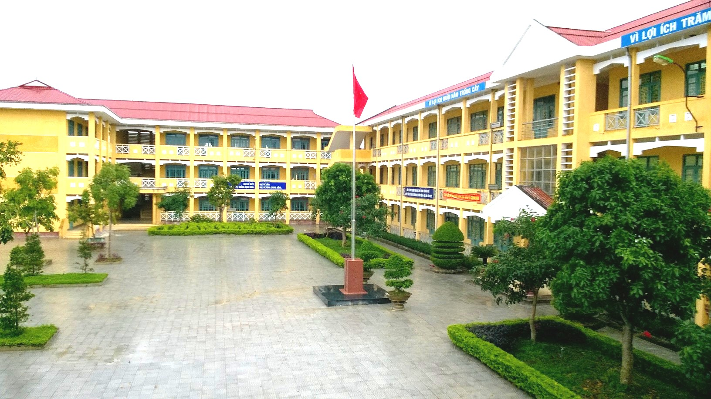
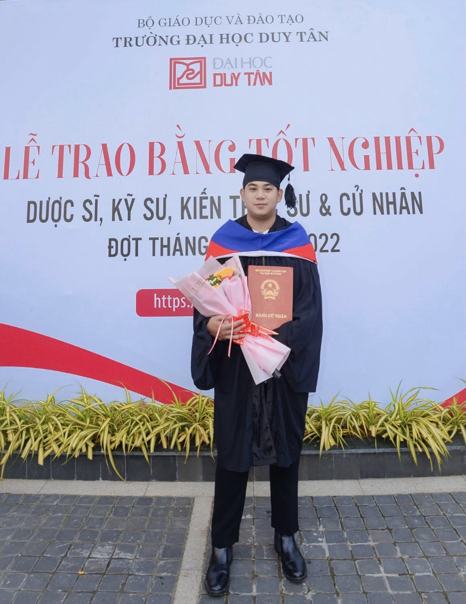
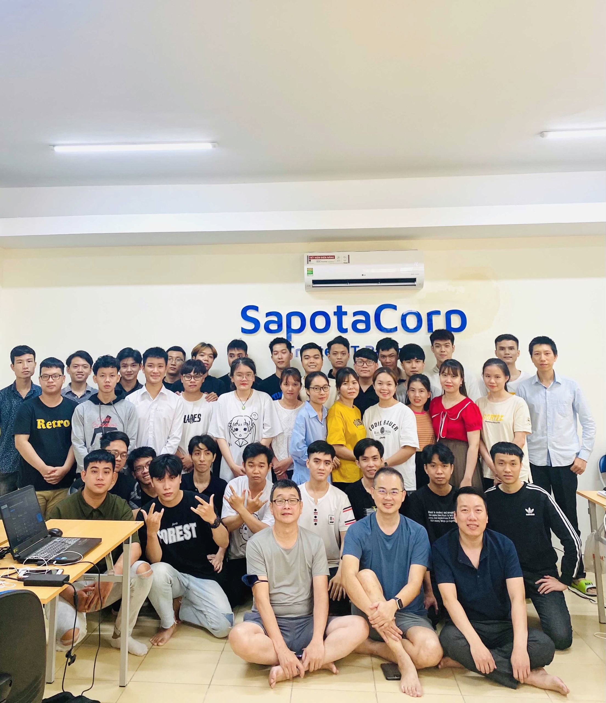
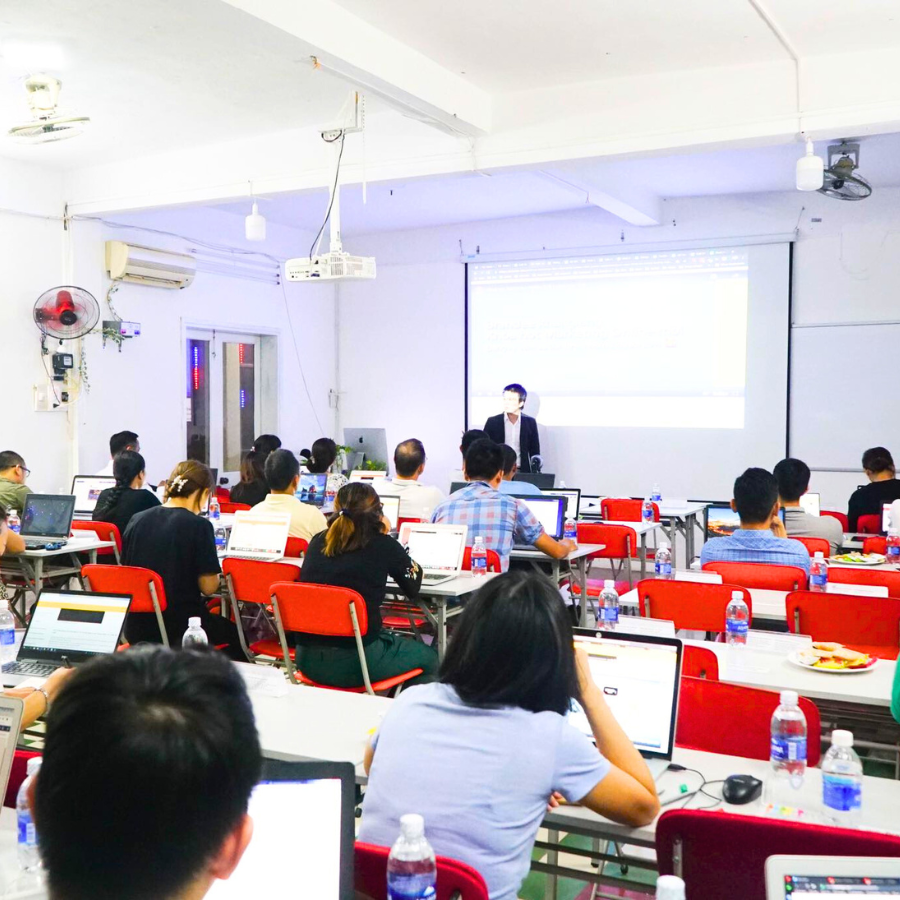
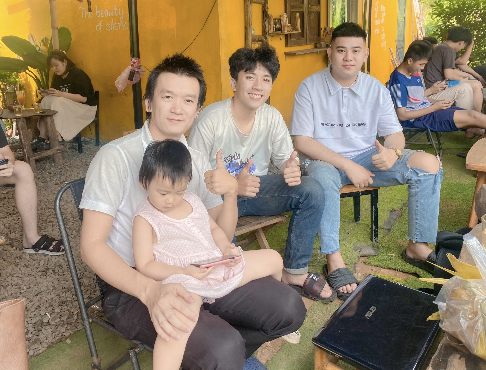

Tôi sinh ra và lớn lên ở Thừa Thiên Huế, thành phố lịch sử và văn hóa ở miền Trung Việt Nam. Từ nhỏ, tôi được bao quanh bởi vẻ đẹp của thành phố cổ, với các di sản văn hóa và kiến trúc độc đáo. . Gia đình là nguồn động viên lớn nhất của tôi, họ luôn tạo điều kiện tốt nhất để tôi phát triển và khám phá sự thế giới xung quanh.
Từ cấp 1 đến cấp 3, cuộc đời tôi đã trải qua giai đoạn học tập và trưởng thành. Tôi hòa nhập vào môi trường học tập mới, xây dựng tình bạn và khám phá sở thích cá nhân. Qua các năm, tôi đã phát triển kiến thức và kỹ năng trong các môn học, đặc biệt là kỳ thi tốt nghiệp cấp 3, đây là cột mốc cho trang mới và tương lai sự nghiệp của tôi. Giai đoạn này đã xây dựng nền tảng cho tương lai và hình thành con người tôi ngày hôm nay.
Trường tiểu học Phong Bình
Trường THCS Phong Bình
Trường THPT Trần Văn Kỷ
Tôi bắt đầu học Đại học ở Duy Tân University, tôi theo học ngành Công Nghệ Phần Mềm ở đó. Học đại học là một giai đoạn quan trọng trong cuộc đời của tôi. Đây là thời gian tôi theo đuổi sự nghiệp và chuyên môn hóa kiến thức của mình.
Sau khi tốt nghiệp, tôi bắt đầu sự nghiệp của mình trong lĩnh vực IT . Tôi đã có cơ hội thực tập và làm việc tại công ty SapotaCorp và được tham gia vào các dự án thú vị. Tuy nhiên, sau một thời gian, tôi nhận ra rằng công việc này không thực sự phù hợp với sở thích và đam mê của tôi.
Sự nhận thức về sự không hài lòng và khát khao khám phá bản thân đã thúc đẩy tôi tìm kiếm những cơ hội mới. Tôi đã quyết định tham gia vào một khóa học đào tạo sáng tạo và khám phá một lĩnh vực hoàn toàn mới-Digital Marketing.
Điều này đã mở ra một cánh cửa mới cho tôi và cho phép tôi thể hiện sự sáng tạo và cảm nhận niềm đam mê sâu sắc đối với mảng Marketing này.
Tôi quyết định chuyển hướng ngành nghề vào Digital Marketing. Dù không có nền tảng kiến thức vững chắc, nhưng sự quyết tâm và khao khát tìm hiểu đã thúc đẩy tôi tiến lên. Tôi bắt đầu tim hiểu về Brandee.edu.vn để tham khoá học Marketing của Thầy Siêng.
Tôi bắt đầu hòa nhập vào môi trường làm việc, học hỏi từ Thầy các kinh nghiệm để áp dụng kiến thức vào công việc thực tế. Cuộc sống không ngừng phát triển và tôi đã tìm thấy niềm đam mê và định hướng trong Digital Marketing
Tôi hiểu rằng con đường thành công không phải là con đường thuận lợi, mà là con đường mà tôi đam mê và tận hưởng. Tôi tin rằng sự kiên trì và đam mê sẽ đưa tôi đến thành công trong lĩnh vực này.
Cuộc đời của tôi vẫn đang tiếp diễn và không ngừng phát triển. Tôi tin rằng mỗi ngày mới mang đến những cơ hội mới và những trải nghiệm đáng giá để tôi tiếp tục khám phá và phát triển bản thân.